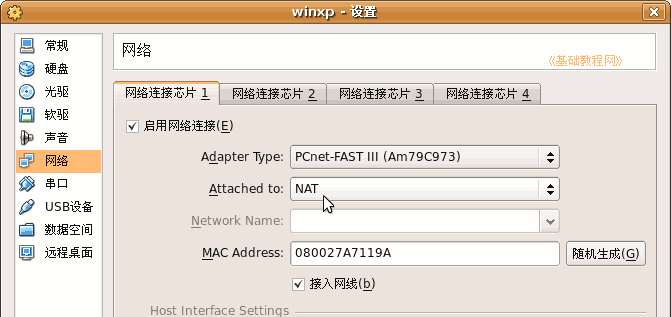
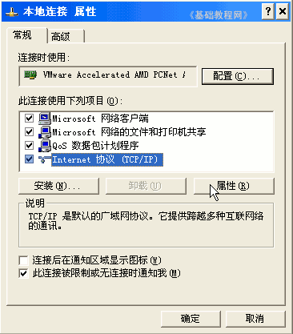
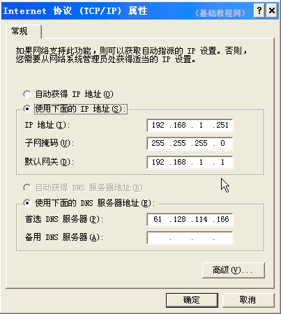

VirtualBox 虚拟机基础入门教程
作者：TeliuTe 来源：基础教程网
六、关于连网 返回目录 下一课安装好系统后，如果要上因特网，还需要进行连网设置，下面我们来看一个练习；
1、NAT上网1）VirtualBox默认为Nat共享上网，则主机上网后，虚拟机可以不用设置而直接上网；

如果是桥接(bridged)，则需要按下面的操作独立设置上网；
2、局域网连网
1）局域网连网需要设置本机IP，网关和DNS；
2）启动XP进入桌面后，点“开始-控制面板”，进入后找“网络和Internet连接-网络连接”，
也可以在网上邻居”图标上点右键选“属性”，进入本地连接属性；

2）在面板的中间找到Internet协议，然后点“属性”，进入设置面板；

3、宽带ADSL
1）进入后点“开始-所有程序-附件-通讯-新建连接向导”，一步一步按提示即可；
2）详细步骤可以参考：http://teliute.org/win/TeComput/lesson24/lesson24.html；
本节学习了VirtualBox中设置连网的基本操作，如果你成功地完成了练习，请继续学习下一课内容；本教程由86团学校TeliuTe制作|著作权所有
基础教程网：http://teliute.org
美丽的校园……
转载和引用本站内容，请保留作者和本站链接。